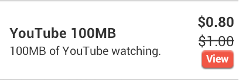

This topic details all the settings for entitlement products. This is the information you will need when you add or edit entitlement products.
Service Design Center uses a change management process to track and approve all changes to any product. All of these changes, including additions, edits, and deletions, must go through the promote-approve-deploy process before they become available.
Any changes you make (change a name, change a price, add or delete a product from a bundle, etc.) to any product do not affect any users that already have the product.
The General tab contains most of the settings you will configure to determine how an entitlement product looks, acts, is priced, and more.
These settings define how information about an entitlement product will appear to customers.
| Setting | Description |
|---|---|
| Name | Required. The name serves 2 primary purposes: it's what you see in product lists and it's what customers see as a descriptor when they are making purchase decisions. The name is limited to 115 characters. |
| Short Description | Brief plain-text information about the entitlement product that sometimes appears with the entitlement product name. |
| Marketing Message |
Descriptive rich-text information about the entitlement product that appears on only the pre-purchase detail page above the content you add in the Description field. You can format the content you enter in several different ways using the functions in the toolbar. This field is best for a small amount of marketing information that will help drive purchase decisions, such as offers customers will receive with purchase. Use the Description field for larger amounts of additional product information.
|
| Description |
Detailed and descriptive rich-text information about the entitlement that appears on entitlement detail pages. The content you enter here is seen on the product detail page both pre- and post-purchase. You can format the content you enter in several different ways using the functions in the toolbar. This field is best for for providing additional details about the product, for adding details to the brief marketing message, for legal boilerplate content, and so on.
|
These settings determine who can receive the entitlement and how an entitlement can be allocated.
| Setting | Description |
|---|---|
| This product can be purchased for |
Required. Determines who can receive an entitlement when it is purchased by a customer. Select
Gifted products cannot have more than one cycle, because when you purchase an entitlement product, you are purchasing only the first cycle, and gifting an entitlement product with more than 1 cycle would require the gift recipient to either pay for subsequent cycles or cancel the entitlement product before it renews. So if you choose
An entitlement can be gifted only at purchase time. The purchase process of a gift requires a phone number to be input by the purchaser to identify the gift recipient. There are several issues that could occur and that would prevent the completion of a gift purchase, issues that include:
|
| Allocation |
Required. Determines how an entitlement is allocated to subscribers. Select
The Assignable and Shareable options are viable only when the tenant offers more than one subscriber per account.
|
| Share Method |
When Shareable is selected as the Allocation setting, determines how that sharing occurs. Available only when the Allocation setting is Shareable. Select:
|
| Assignment Method |
When Assignable is selected as the Allocation setting, determines how that assignment occurs. Select:
|
There are a number of ways that customers receive entitlements where sharing, assigning, and gifting settings will not be available to them. In those cases, default entitlement sharablility and assignability occurs.
Some sharing and assigning is done by the entitlement purchaser as part of the purchase process. In fact, some settings require sharing, assigning, or gifting selection at purchase time. But when an entitlement is mandatory to be received, is received via the complimentary or provisioning API, or is received as a benefit, it is not included as a part of such a purchase flow, so sharing and assigning selections that are required within that flow cannot be made.
A specific example of this is if an entitlement's Allocation setting is Assignable and the Assignment Method setting is Assignable at purchase only. If the entitlement is received as a benefit, it doesn't go through that customer-facing purchase flow, and so cannot be assigned. Another example is if an entitlement's This product can be purchased for setting is Gift recipient only. If this entitlement was being purchased, the only option at purchase time would be to enter a phone number of a subscriber outside the account to receive the entitlement. But again, if the entitlement is received as a complimentary entitlement, the screen to enter a phone number isn't shown, so there's no way to gift the entitlement.
The general rule is that if an entitlement is received outside of the customer-facing purchase flow, like when an entitlement is received automatically, and has a combination of settings that require decisions only in that customer-facing purchase flow, then the entitlement is assigned to the subscriber designated to receive the entitlement, and if that subscriber is not known, the entitlement is assigned to the first subscriber in the account.
These settings define which entitlement policy is used in the product.
| Setting | Description |
|---|---|
| Entitlement Policy |
Required. Select the entitlement policy necessary to provide customers the functionality you control in the entitlement product. If you are not sure which entitlement policy to choose or you do not see the entitlement policy you want to use, contact your entitlement policy designer.
|
| State |
Determines whether or not the entitlement product functionality is enabled or disabled when received. Select from:
Normally, you will want to leave this setting in its default value because you want subscribers that receive the entitlement product to be able to use its functionality. But setting the state to Off may be desired when the entitlement product is part of a bundle and the bundle is in an exchange category. An example may illustrate this best. Say you have an entitlement product to allow subscribers to use hotspots. You want to bundle the hotspot functionality with several plans that you have in an exchange category. You have 1-line plans, 2-line plans, 3-line plans, etc. You want the hotspot functionality to be enabled for subscribers only when a 2-line (or greater) plan is purchased. You can't just add the entitlement product only to the bundles that are 2 lines or more because that will will create exchangeability issues. (Bundle exchanges within an exchange category are allowed only between bundles that have the same number of products that use the same policies.) So you create 2 entitlement products. Both use the same entitlement policy. The one with the State value of Off you bundle with the 1-line plan and the one with the State value of On you bundle with the other plans. |
These settings determine how and when an entitlement product is available in the store.
Several of the behavior settings relate to aspects of the entitlement cycle, aspects that include:
| Setting | Description |
|---|---|
| Recurring |
Required. Defines whether the entitlement product is a multi-cycle subscription, lasts for only one cycle, or lasts for one cycle with the option for customers to renew. If you selected Giftable only in the This product can be purchased for setting, the only option here is No. This is because entitlement products that are gifted can have only one cycle because when you purchase an entitlement product, you are purchasing only the first cycle, and gifting an entitlement product with more than 1 cycle would require the gift recipient to either pay for subsequent cycles or cancel the entitlement product before it renews.
Select:
Any segmentation rules that include this setting, including restrictions and offers, will treat both Yes and Optional as the same. That is, if a rule is defined to match a recurring product, the rule will match if this setting for the product is either Yes or Optional.
|
| Number of Cycles |
Required. This defines the number of cycles a subscriber can receive the entitlement. The options determine if an entitlement repeats at the end of its duration. (The duration is defined either as the account cycle, if Aligned to account cycle is Yes, or as the entitlement's Cycle Duration value.) If so, the customer is grandfathered the entitlement rate and attributes when it is renewed, even if you have made significant changes to the entitlement or even deleted it from your catalog. Select from:
Entitlements renew when they are set to an unlimited number of cycles or when they are "limited" to more than one cycle, that is, the number in the Limited to option is greater than 1. Renewing means that at the end of a entitlement cycle's duration:
If you are going to make the entitlement giftable, then it cannot renew and you must select the Limited to option and enter 1. This is because when you purchase an entitlement, you are paying only for the first cycle. If gifting an entitlement with more than 1 cycle was allowed, the recipient would be responsible for either paying for subsequent cycles or canceling the entitlement before it renews. |
| Aligned to account cycle | Required. This is the alignment, and it defines when renewals occur and are billed. Available only when Number of Cycles is set to Unlimited or set to Limited to and its value is greater than 1. Defines whether the entitlement is billed when the account cycles or when the entitlement is purchased. |
| Cycle Duration |
Required. This defines how long an entitlement cycle is. Available only when Aligned to account cycle is set to No. Select from:
|
| Prorated on first cycle |
Required. This is proration, and it defines how much is billed and allotted for the first cycle. Available only when Aligned to account cycle is set to Yes. Best Practice: When you have an entitlement that has more than one cycle and is aligned to the account cycle, you'll almost always want to set this to Yes. If you set it to No, a customer will be charged full price for the entitlement even if they buy it on the last day of the account cycle. Even when an entitlement is prorated normally, when it is offered in an exchange category in a carousel and a customer receives the entitlement through the exchange category in the carousel, no proration occurs. The customer is charged the full cycle price. |
| Visibility |
Determines whether or not the entitlement is visible to customers. If this is set to Hide, the entitlement is not visible for purchase in the store nor is it visible in a customer's account information. It is not shown as part of a bundle when included in a bundle. For more on how hidden entitlement work in bundles, see Hidden Products in Bundles. An entitlement product cannot be hidden unless its price is equal to 0 (zero). This is because at checkout, a non-zero priced entitlement product in the cart will result in a total price that is different from the sum of the prices of the visible products, which could cause customer confusion. So this setting is unavailable until a price value greater than 0 (zero) has been entered for the entitlement product.
|
| Setting | Description |
|---|---|
| Retail Price | Defines the default, standard price for the entitlement product. This is the price customers will see unless overridden by the Sale Price field or other available offer mechanisms. If no value is entered, 0 is used. |
| Sale Price |
Overrides the Retail Price while allowing you to keep a record of the retail price. To return to the Retail Price, delete the contents of this field. A Sale Price can affect whether customers qualify for offers (benefits and discounts), depending on the value of the Apply to sale price setting in the offer.
When a customer is viewing the catalog, both the sale price and the retail price are visible in the product listing. The exact appearance will depend on your branding. The following graphic is an example of what customers might see in a product where the Retail Price is 1.00 and the Sale Price is 0.80:  Some research suggests that consumers believe prices with more syllables are higher than the same prices with fewer syllables, and this is seen in both spoken and printed prices. Both commas and decimal points add to the "syllables," so, for example, $1,199.00 is viewed as more than $1199. ItsOn provides a client-side branding setting that can present catalog prices without the decimal and the digits after the decimal for whole number prices. If this setting were used for the example above, the values seen in the catalog presentation would be $1 and $0.80. This setting does not affect the amounts you enter in the Retail Price Price or the Sale Price fields, nor the amounts shown during checkout, in customer invoices, and in customer service records.
|
| Tax Classification |
Required. This defines what specific taxes should be charged, if at all. Different municipalities and other political units charge varying amounts of and types of taxes and fees on specific types of goods and services. This selection drives the correct type and amount of taxes to be collected based on the customer's location and type of service purchased. Select from:
|